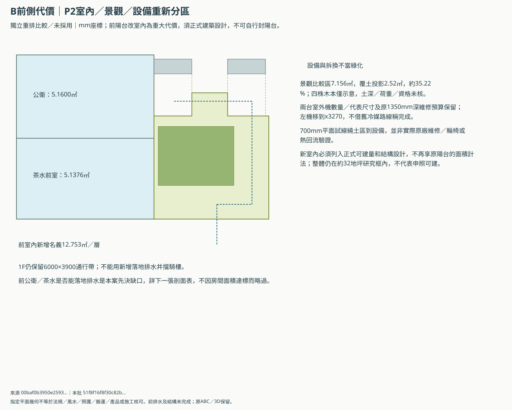

B／C尚未完成的同版比較
2026-11-13｜預先討論基準，未整套採用。B最新局部與C照護續版尚未全部併入整棟；合法可建量、產品及專業核對待資料。A裝潢另談，預埋前共同合圖。
最新洗衣方向：三棟1F共用一組、C2F先暫不用但保原機位與空間，A2F以上另預留機位。依洗曬平面、前側瓶頸／條件式後口及日常／雨天輪用討論；原圖內機位保持，未選A為共享主位置。
以下比較均未採用。本輪只統整既有研究的完整代價，沒有生成新的B／C格局，也沒有以建商／兩個模型同意取代屋主與專業判斷。
BC-CMP-01｜研究基線與兩衛原目標
目前比較
NEW-01b在115mm每面內縮假設下：主臥20.2261、公衛扣0.04管井4.4667、套衛4.7124㎡；公衛無直接窗。
替代與代價
保P1／P2／P3，P4另排2F：四件器具原尺寸，WC／盆靠左、茶水橫放，公衛門左移550；原房界／井／乾檢修不動。115模型公衛5.2860／茶水5.1036（完整門活動後5.0640）、主臥23.6651／套衛6.133㎡。三線縮短、淋浴多710；舊完整支管＋偏移對3500比較值最緊3504.4、額外25即失守。Claude G4／G5原高程各列不容；G4D固定500只有部分板厚／接頭假設容納。第二輪新增d上下限、外擴與上游表，不直接選500或600。
建議深化方向
保P4短支管，4.4mm假算餘量不當排水成立。第二輪已核，G4D家族優先；t300上凸50至少583.379只消負餘量，下方要求及穩定餘量未到，不能逕選600。先核合法終端，再完整局部包絡，前濕區重排其次、G5鏡像最後。400井距平台20mm、騎樓3510.7及全線通氣清掃未解；兩衛外窗、面積與1F兩版保留，沒有全共識或採用。
屆時才需取捨
G0已知占平台0.16㎡碰局部試線，G1擋側門、G2／G3碰踏步；四點反例不證全域無解。第二輪已核的僅部分算式與研究排序，Q3前KTV已乾，y3900／4970梁未知。上游假間隔11.6不當全線50、2961.6不當整室淨高，梯下管不得再向上穿梯，合流／通氣與兩版搬運未核。現用BFD八題及28欄空白接口收同版資料，局部算式相容不放行；先核合法終端及真實構造，不要求屋主放寬地下祭祀保護；新案未併主3D。





BC-CMP-02｜後巷預設／前門備案
目前比較
屋主陳述有後巷，先以後門直接進庫；前門為沒有後巷時的完整備案。
替代與代價
前門經側緣入庫、祭祀與搬運分時；第三輪洗衣機右移990mm，操作與家務門仍需分時。
建議深化方向
兩個版本獨立核算與保留，不混用門、洗衣或通路。後巷存在、通行權與合法開孔各自核，含桿人員搬運未驗。
屆時才需取捨
真實入口權利、完成門組、地坪與實物搬運資料齊備後確認可用分支；不取消前門備案。

BC-CMP-03｜整棟可關前室與局部照護
目前比較
整棟已整合4m／24級／270mm、共享平台及前置可關門。
替代與代價
新增完整1F獨立整合比較：保現行樓梯／可關前室與客餐排法，重新分區接走道、孝親入口與側盆／雙片浴室門；18件尺寸保留，13件座標調整，四組門81態明列。盆仍偏250、濕地分時轉位、扶手側18.5mm及公衛門組未知保留。
建議深化方向
先用新完整1F看配置與取捨，主3D及舊C-care不覆蓋。900方塊不當真人照護，公衛600方塊不當無障礙。收門／盆／扶手／折椅、完成面與足尺可及資料後再回套；床體避濕區、獨立訪客公衛保留，C2F機位暫不用、保空間，共用1F按新研究另核。
屆時才需取捨
同版門組／盆／扶手／折椅與完成面、坐姿可及和救援評估齊備後，再決定局部採用或改位。


BC-CMP-04｜客房單雙機與景觀繞線
目前比較
C2F洗衣機依最新方向暫不用、保原機位與日後使用空間；右景觀／左家務及客房原雙預留保持，共用1F另研。
替代與代價
客房先比單機服務；AC01的P2保景觀但概念路線由15.495增至20.895m。P2並未併入當前3D。
建議深化方向
先保景觀、洗曬及單機研究，按真實負荷、精確配對產品限長、樹冠與拆機回套；不先買雙機、不借其他系列限長。
屆時才需取捨
真實負荷／產品／梁板／合法排水到齊後，若單機或P2不符，再比機位／系統與代價。


BC-CMP-05｜三樓KTV20㎡、後客房與隔音／RF代價
目前比較
Q1原後娛樂14.3141㎡，再每面加50mm空間預算剩13.4541，低於原14下限；固定後段樂觀總容量31.0171也不足客房12＋KTV20。
替代與代價
Q2前娛樂避2F主臥；100mm額外預算19.2079㎡未達20。後客房12.423、公衛6.133、工作地面4.123㎡保留。R1留RF左1100板帶、井前護欄退回天井上方，洞5.112改2.639㎡；濕地面仍壓2F乾區5.112㎡。R0完整洞及R2室內乾家務代價備案保留，四門81態只適用不增支撐的同地面。
建議深化方向
優先研究前娛樂及R1留板帶，不採用；R1上方1300×2030開口可能更暗難乾衣，風水、防水、戶外資格與結構仍待核。原R0護欄占祭祀投影0.25㎡另列待核。保KTV20與戶外4㎡原目標，R2計0戶外，不搬RF就稱解決，不用A／C暗補。
屆時才需取捨
同版資料先核合法量體、RF支承／開口及上下濕區，再用S1前熱泵／S2後濕設備預留及D1／D2日常試線回套真實包絡；24㎡固定容量缺口另見BC-CMP-06。若R1開口乾衣不成立，重比完整洞護欄修正版，不默認取消陽台。


BC-CMP-06｜RF24㎡原目標、日常家務與前門到達
目前比較
固定前帶名義23.4㎡；只扣外緣、未扣設備的樂觀上界21.83945㎡，仍短24目標2.16055㎡。後側與前側被現行祭祀保護及梯核分隔，不能以日常路線相加。原候選右鉸鏈RF門全開仍卡外轉角。
替代與代價
D1前熱泵／D2後熱泵沿同一設備預留放同1800×600晾衣架與1200×450折衣桌，RF前門同洞改左鉸鏈，700／800條件試線可到達。900指定折線超保守右到達平台15mm；若來源2200全寬板確認可用平地，900可另比容納。
建議深化方向
D1先保設備檢修但折衣與到達分時；D2家務較順但後設備零／65mm間隙仍緊迫。保原24㎡及家規，不因桌架能擺下就默認接受縮平台，不借A／C或三樓天井補算。
屆時才需取捨
實際包絡與RF前門／平台到齊後比較。若接受較小功能平台須屋主明示；24不可讓步則要整棟樓梯／上層重大重排研究，不再只移設備，也不假造已完成的24㎡替代案。


BC-CMP-07｜Q3 KTV20㎡與上層樓梯的完整交換
目前比較
Q2原KTV115＋100／面後19.2079㎡；若同加50mm井包與0.54㎡機櫃，僅18.6129㎡。原梯及Q1／Q2全部保留。
替代與代價
Q3向原梯核左後延伸800×2400，整層量體不增，同口徑20.1889㎡；兩段上層梯折返1900→1100，18級／1000寬／270踏面保原。二樓L形接段保下樓梯，RF到達後移800；另以完整到達／前室接候選原RF側門y4400，前／側門18態重新核，設備桌架不動。客房／公衛／天井不動。
建議深化方向
留Q3作可保面積但需改上層梯的完整代價案，不採用。新增主要入口通路，不等於座位增加；150／面只有19.2399㎡，地面服務改1㎡也剩19.7289。聲學、結構、門及新風需同版資料，不挑薄材料稱能唱歌。
屆時才需取捨
先核上層梯L形到達、RF新完整平台／前室／梯井與整座剖面，再核聲學、前900／側770成品及實際包絡。前熱泵巡檢改前門避晾衣架，不能借此稱通風或全案通過。新增四種高度帳、整機汰換八列條件及九項工程回覆，寬度相容不是搬運通過；24㎡假加帶與梯核／祭祀衝突。任一不成立保Q2與KTV20原目標，不默認縮平台或改家規。


B／C比較回覆表：先補同版資料，再記屋主選擇；空白不是已接受縮面積、無窗或取消備案。
本包依據 0683ac112efadbb43f909c246e5dcaf21b6f35722da1f6f1fa7adcf9db70c0b9。靜態閱讀副本，沒有新瀏覽器／3D或專業驗收；來源與使用邊界。